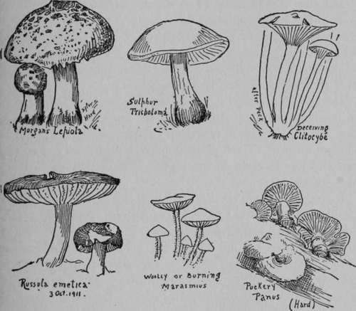

Unwholesome But Not Deadly Toadstools
Description
This section is from the book "The Book Of Woodcraft", by Ernest Thompson Seton. Also available from Amazon: The Book of Woodcraft.
Unwholesome But Not Deadly Toadstools
There is another group that are emetic or purgative or nauseating, but not deadly. These it is well to know.
Unwholesome.
Morgan's Lepiota (Lepiota Morgani)
Six to eight inches high and five to nine or even twelve inches across the cap:
Cup, white dotted over with fragments of a brownish or yellowish skin; gills, white at first, then green; spores, green; flesh, white, but changing to a reddish then yellowish when cut or bruised. This immense toadstool is found in meadows all summer long, usually in rings of many individuals; it is poisonous to some and not to others, but is never deadly so far as known.
Sulphur Tricholoma (Tricholoma Suphureum)
Two to four inches high: cap one to four inches apart, dingy or reddish sulphur yellow above; flesh, thick and yellow; spores, white; stem, yellow inside and out; has a bad smell and a worse taste; is considered noxious if not actively poisonous. It is the only inedible Tricholoma known.
Deceiving Clitocybe (Clitocybe Illudens)
This grows in clusters on rotten stumps or trees from August to October. It is everywhere of a deep yellow or orange, often it is phosphorescent. Each plant is four to six inches across the cap and five to eight inches high. It is usually nauseating and emetic.
Russula (Russula Emetica)
This is known at once by its exquisite rosy red cap, and its white gills, flesh and stalk. Sometimes the last is tinged rosy. It is a short stemmed mushroom two to four inches high; its cap pinkish when young, dark red or rosy red when older, fading to straw color in age; its gills and spores, white. Its peppery taste when raw is a fairly safe identification. In most books it is classed as "slightly poisonous," but McIlvaine maintains that it is perfectly wholesome. I know that I never yet saw one that was not more or less gnawed by the discriminating little wood folk that know a good thing when they smell it.
Woolly Or Burning Marasmius (Marasmius Urens)
Two to three inches high; cap two to three inches wide, pale yellowish, becoming paler; spores, white; gills, brown, paler at first; stem, woolly pungent. Poisonous to some persons but never deadly.
Puckery Panus (Panus Stipticus)
Cap one half to one inch across, cinnamon color; gills, cinnamon; spores, white; stem, under one inch long, paler than the gills; grows on stumps and in bunches: noted for its extreme acridity; said to be a purgative poison.
Sticky Volva (Volvaria Gloiocephelus)
Cap about three inches across; with a grayish bump in the middle, dark opaque brown and sticky and lined at the edge; stem, six or more inches high and one half an inch thick, brownish, a few fibres on outside; gills, reddish; spores, pink; volva or poison cup, downy, splitting into several unequal lobes. Said to be poisonous.
The Entolomas Or The Fringed Entolomas
There are several of this genus that are poisonous or at least suspicious. They are of any size up to six or seven inches high and four or six inches broad, with pink spores and gills and sinuate gills.
About twenty species are described and though some are edible they are better let alone, unlike most of the unwholesome kinds their odor is agreeable.
Pie-Shaped Hebeloma. (Hebeloma Crustoliniforme)
Cap, pale tan, yellow, or brick color, a bump in middle; gills, whitish, then clay color, variable in size; spores, yellow. Smells strongly and unpleasantly of radish.
This completes the list of gilled mushrooms given as unwholesome in McIlvaine and Macadam.
White Clavaria (Clavaria Dichotoma)
Of all the coral mushrooms this is the only one known to be poisonous. It is not deadly but very unwholesome. It grows on the ground under beeches and is fortunately very rare. It is known by its white color and its branches dividing regularly by pairs.
Continue to:
Tags
bookdome.com, books, online, free, old, antique, new, read, browse, download